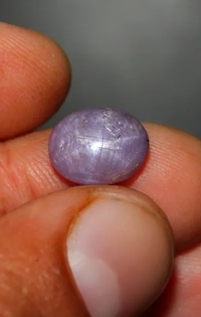

緬甸紅與螢光：為什麼緬甸紅寶特別紅
緬甸紅寶的紅，是鉻與螢光聯手的「自發光紅」——顏色不是反射的，是它自己發出來的。

核心定義
緬甸紅寶（Burmese ruby）被譽為紅寶石的「頂級血統」，其迷人之處在於「絲絨紅」——顏色鮮豔而不刺眼、深沉而有內光。這份內光的來源，是鉻（chromium）與螢光（fluorescence）的雙重作用。
鉻是紅寶石紅色的來源，但緬甸紅寶的鉻含量特別高、鐵含量特別低——低鐵意味著螢光不會被「撲滅」，於是紫外光（日光中含有）激發鉻的紅螢光，讓寶石像從內部點亮一樣，呈現「自發光」般的豔紅。
特徵與分類
| 產地 | 鉻/鐵比例 | 螢光 | 顏色氣質 |
|---|---|---|---|
| 緬甸 | 鉻高、鐵低 | 強紅螢光 | 絲絨紅、內光 |
| 莫三比克 | 鉻高、鐵中 | 中強螢光 | 濃豔紅 |
| 泰國 | 鐵高 | 微弱 | 深紅偏暗 |
| 越南 | 鉻中、鐵中 | 中弱 | 紫紅粉紅 |
螢光強度是紅寶「鮮豔感」的重要推手：紫外光下，強螢光紅寶像通了電；日光下，這份螢光讓體色更飽滿。反之，鐵含量高的泰國紅寶螢光弱，顏色雖濃卻「悶」——這是產地氣質的科學根源。
科學原理
鉻的紅螢光機制：鉻離子（Cr³⁺）吸收黃綠段光，電子躍遷後以紅光形式放出能量——這是螢光的「發射」。緬甸紅寶鉻高鐵低，鐵離子是螢光的「滅火器」（吸收激發能量），鐵少則螢光旺盛。
所以「緬甸紅特別紅」不是玄學：高鉻提供飽和紅的基底，低鐵保住螢光的加成，兩者疊加出「反射紅＋螢光紅」的雙重效果。現代實驗室測量螢光光譜，就能量化這份「紅」。
鑑定與鑑別方法
- 紫外燈測螢光：強紅螢光是緬甸高品質紅寶特徵
- 顯微鏡找產地內含物：水鋁礦針、方解石等
- 分光鏡確認鉻譜線與鐵譜線比例
- 對照權威實驗室產地報告
- 警惕合成：合成紅寶螢光更強更均勻，常洩露馬腳
市場行情與保養建議
緬甸紅寶的產地溢價是紅寶石市場最顯著的一道鴻溝：同品質下，緬甸莫谷紅寶單克拉價常高出莫三比克數倍。「絲絨紅」與強螢光，是支撐這份溢價的科學與美學雙重敘事。
對多數買家，莫三比克紅寶的性價比更高；但對追求「頂級血統」與收藏敘事者，緬甸紅寶的傳奇價值難以取代——量力而為，別為產地神話透支預算。
常見誤區
緬甸紅寶的螢光強度也分級，並非每顆都強；而莫三比克頂級紅寶的螢光同樣出色。螢光是「品質訊號」，不是「產地通行證」。
對紅寶而言，強螢光常是加分（鮮豔感），但價格仍由顏色、克拉、淨度與證書綜合決定。螢光只是其中一個變數，不是捷徑。
冷知識
日光含紫外成分，正好激發紅寶的螢光——所以緬甸紅寶在「太陽下」特別豔。陰天或室內燈光下，它的紅會「收斂」。寶石的顏色，會跟著天氣變。
古人點蠟燭與油燈時，緬甸紅寶在燭光下閃爍的紅光被賦予神性——螢光在傳說裡，早就是「有生命」的證據。
反直覺觀點
如果把螢光關掉，緬甸紅寶會「變淡」——它的豔紅是反射紅與螢光紅的疊加。說到底，緬甸紅寶的傳奇，有物理學的一半功勞。
莫三比克紅寶鐵含量適中，螢光中強、顏色濃豔——它靠「現代開採+品質穩定」成為緬甸的替代者。產地傳說會老，好品質永遠有市場。